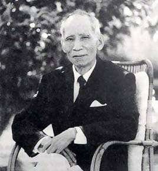
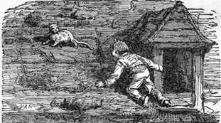

Đó là một thời kỳ đầy đau thương của đất nước. Đó là khi người Pháp nhân danh nền văn minh Thiên Chúa giáo để “khai hóa”, xâm lăng và đô hộ đất nước Việt Nam cho đến ngày nay, khi người Cộng Sản nhân danh cách mạng vô sản chuyên chính để “giải phóng”, khống chế và bạo quản dân tộc Việt Nam.
Tôi đã sống một giai đoạn của thời kỳ đó không những như một nhân chứng mà còn may mắn được tham dự tích cực vào một số biến chuyển và hoạt động sát cánh với một số nhân vật lịch sử. Trên con đường ba mươi năm sống và hoạt động đó, tôi chỉ có một tâm nguyện: ấm no và an vui cho đồng bào.
Nhưng tâm nguyện đó không thành tựu vì trên quê hương tôi đau thương vẫn còn đó, nghèo khổ vẫn còn đó. Các bậc đàn anh của tôi, đồng chí và bằng hữu của tôi cũng đã không thực hiện được hoài bão của đời họ. Tất cả, từ những người có lòng nhất đến những người tài ba đảm lược nhất đều đã thất bại, dù trong cuộc hành trình hùng tráng và bi thiết này, không biết bao nhiêu người đã hy sinh gục ngã.
Quyết định viết hồi ký được khơi nguồn từ ý muốn đi tìm những nguyên nhân lớn nhất, thực nhất của cái thảm trạng mà ngày nay cả dân tộc ta phải nhận chịu, dù những nguyên nhân đó có làm đảo lộn những nề nếp suy nghiệm cũ và làm lung lay những đánh giá lịch sử đã được một số người hài lòng công nhận. Những nguyên nhân này được cố gắng trang trải như một bài học lịch sử để từ đó và do đó, hy vọng những lớp người đang đi tới sẽ tránh được những vết xe đổ đã nghiền nát bao nhiêu trang sử hiện đại dân tộc.
Cuốn sách này được chia làm ba phần tổng quát. Phần thứ nhất nói về thời kỳ thơ ấu và thanh niên. Phần thứ hai, về giai đoạn mấu chốt nhất của lịch sử cận đại: chín năm của nền Cộng Hoà đầu tiên của đất nước. Và phần chót, về hậu quả bi thảm của một chế độ phi dân tộc.
Vì là hồi ký chính trị của một cá nhân nên các sự kiện có thể thiếu sót do tính chất phức tạp của các biến cố, nhưng chắc chắn là xác thực. Các suy nghiệm cũng vậy, đôi khi chủ quan nhưng luôn luôn nghiêm chỉnh vì chúng bắt nguồn từ và kết tụ về một quy luật đặc thù của lịch sử Việt:
HỄ ĐÃ PHI DÂN TỘC THÌ THẾ NÀO CŨNG PHẢN DÂN TỘC
Điều này đã được chứng nghiệm rõ ràng khi suy giải trách nhiệm của những người nắm chức vụ lãnh đạo Việt Nam trong 30 năm qua. Người thì đến giờ hấp hối còn ước mong được gặp Các Mác, Lê-nin bên kia thế giới, người thì muốn nối dài biên giới Hoa Kỳ từ Alaska đến sông Bến Hải, người thì đào nhiệm bỏ ngũ khi Hoa Kỳ ngưng viện trợ “chống Cộng”…
Tất cả đã không có căn bản dân tộc nên đã làm khổ đau dân tộc.
Vì vậy, nếu cuốn sách nhỏ này, với văn phong bộc trực và võ biền của một người lính già, với tâm tình thô thiển nhưng chân thành của một người dân xa nước, mà khắc đậm thêm được quy luật lịch sử đó trong lòng người đọc, thì tác giả thấy ước vọng của mình có thể trở thành hy vọng về một tương lai tươi sáng cho đất nước.
Cuối cùng tác giả muốn bày tỏ lòng tri ân đến các bậc đàn anh, các thân hữu đã khuyến khích, bổ khuyết, giúp ý kiến và tài liệu giá trị rất khó tìm ở hải ngoại, cũng như đã yểm trợ phương tiện ấn loát và tài chánh để cuốn sách này được hình thành.
Trong phần Phụ Lục ở cuối sách, tác giả mạn phép trích dẫn ý kiến của 100 nhân vật, tổ chức Việt Nam đã đăng trên các sách báo và một số thư từ các bằng hữu đã viết riêng. Việc này theo thường tình là thất lễ bởi đã không xin phép trước, nhưng tin quý vị sẽ sẵn sàng tha thứ bởi vì tác giả trộm nghĩ rằng các suy nghiệm can đảm và chân thành của quý vị không những chỉ có giá trị cho riêng cá nhân tác giả mà còn cho rất nhiều người khác. Bây giờ cũng như mai sau.
Hải ngoại, Trọng Đông năm Ất Sửu (1985)
Hoành Linh Đỗ Mậu